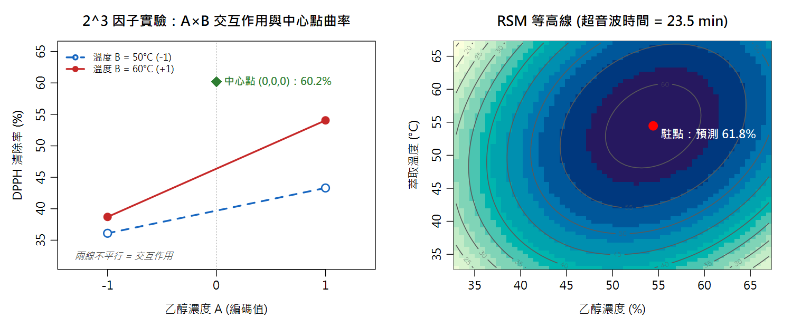

實驗設計與反應曲面法 Design of Experiments & Response Surface Methodology — with Base R
研發會議上主管說：「下個月要交出最佳萃取條件，實驗預算只夠 20 次。」OFAT 走不完、瞎試沒根據——這一章就是你的預算內攻略。
本章新詞先認識：因子/水準＝實驗中改變的條件/設定的值；交互作用＝1+1≠2 的加成效果；中心點＝全部設中間值的一組實驗；CCD/RSM＝找極值的標準設計與方法；駐點＝曲面的山頂位置。
名詞卡住了？回 Ch0 名詞圖鑑 查白話解釋與比喻。
- 說出 OFAT（一次一因子）為何看不到交互作用、為何常停在假最適點
- 會用
expand.grid()建立 2³ 全因子設計，用lm()估主效應與交互作用 - 會用中心點做曲率檢定與純誤差估計，判斷「何時該上 RSM」
- 會建立中心複合設計（CCD）、配二階模型、用矩陣代數找駐點並判斷極大/極小
- 會讀 RSM 模型的 ANOVA 表（一階／交互作用／二次項各解釋多少變異），會用中心點重複做失擬檢定（呼應 Ch16/Ch17）
- 會報告預測區間並設計驗證實驗（呼應 Ch2/Ch8）
- 認識
rsm、FrF2、desirability等 CRAN DoE 套件生態（Tanaka & Amaliah 2022）
rsm 對照。數據為教學模擬（含已知真實模型，方便對照還原度）。14.0 DOE 入門：先認識「實驗設計」這件事
本章所有內容建立在一個前提上：實驗的「設計」比「執行」更早決定成敗。在學統計語言之前，先用一個例子把觀念建立起來。
什麼是實驗設計（Design of Experiments, DOE）？ DOE 是「在動手做實驗之前，先規劃好要改哪些條件、改到哪些值、各做幾次」的學問。 目標是用最少的實驗次數，得到能回答問題的數據——而不是憑感覺一個一個慢慢試。
直覺的做法是 OFAT（一次一因子）：固定其他條件，只動溫度、試 5 次；再固定溫度、只動時間、試 5 次…… 這種做法有兩個致命傷：① 實驗次數爆炸（因子一多就跑不完）； ② 永遠看不到交互作用（溫度的效果會隨時間改變，但 OFAT 的設計結構上看不出來）。
為什麼食品領域特別需要 DOE？因為食品實驗貴且慢： 樣品要前處理、儀器要排隊、一個條件可能要跑一整天。同時食品配方與製程天生充滿交互作用 （糖×酸、溫度×時間、油×乳化劑）。DOE 讓你用 8～20 次有計畫的實驗，回答別人用 50 次亂試都答不出的問題。
| 核心名詞 | 白話定義 | 本章例子（DPPH 萃取） |
|---|---|---|
| 因子 Factor | 你主動改變的條件 | 乙醇濃度、溫度、超音波時間 |
| 水準 Level | 因子設定的幾個值（通常先取高、低兩個） | 乙醇 40%（−1）與 60%（+1） |
| 反應 Response | 你量出來、想要最佳化的結果 | DPPH 清除率（%） |
| 主效應 Main effect | 單一因子從低水準換到高水準，反應平均改變多少 | 乙醇 40→60%，DPPH 平均 +11.3% |
| 交互作用 Interaction | A 的效果取決於 B 的水準 | 60 °C 時乙醇的效果約是 40 °C 時的 2 倍 |
| 中心點 Center point | 所有因子都取中間值的重複實驗 | (乙醇 50%, 50 °C, 22.5 min) 做 4 次 |
有了這些觀念，下面正式比較 OFAT 與 DOE 的差別。
14.1 為什麼是 DOE：OFAT 的陷阱
| 面向 | OFAT 一次一因子 | 因子設計 (DOE) |
|---|---|---|
| 實驗 run 數（3 因子 2 水準） | 邊試邊加，常超過 12 | 8（＋中心點） |
| 交互作用 | 結構上看不到 | 完整估計 |
| 曲率 | 無從判斷 | 中心點直接檢定 |
| 最適點 | 常停在「沿軸的假最適點」 | RSM 收斂到真最適點 |
14.2 2³ 全因子 + 中心點：效應與曲率
8 個因子點（±1 組合全跑）＋ 4 個中心點（0,0,0 重複）。設計矩陣與模擬結果：
| Run | A | B | C | DPPH (%) | 備註 |
|---|---|---|---|---|---|
| 1 | −1 | −1 | −1 | 33.7 | 因子點：估主效應與交互作用 |
| 2 | +1 | −1 | −1 | 41.6 | |
| 3 | −1 | +1 | −1 | 38.0 | |
| 4 | +1 | +1 | −1 | 52.3 | |
| 5 | −1 | −1 | +1 | 38.5 | |
| 6 | +1 | −1 | +1 | 45.0 | |
| 7 | −1 | +1 | +1 | 39.4 | |
| 8 | +1 | +1 | +1 | 55.8 | |
| 9–12 | 0 | 0 | 0 | 59.5 / 61.3 / 59.5 / 60.4 | 中心點：估純誤差＋偵測曲率 |
配一階＋交互作用模型 lm(y ~ (A+B+C)^2)：
| 項 | 係數 | 效應 (=2×係數) | 解讀 |
|---|---|---|---|
| 截距 | 48.75 | — | 因子點的整體平均水準 |
| A 乙醇 | 5.64 | 11.3 | 最大主效應 |
| B 溫度 | 3.34 | 6.7 | 次強 |
| C 時間 | 1.64 | 3.3 | 最弱 |
| A:B | 2.04 | 4.1 | 明顯交互作用（圖 14-1 左） |
| A:C | 0.09 | 0.2 | 可忽略 |
| B:C | −0.41 | −0.8 | 可忽略 |

曲率檢定：中心點的殺手鐧
2 水準設計只能配「直線」——但中心點實測平均 60.2%，因子點平均只有 43.0%， 差了 17 個百分點。用中心點的純誤差 s = 0.86 做檢定：
14.3 RSM 入門：把「找最大值」變成「找山頂」
14.2 的曲率檢定告訴我們「曲面是彎的」——這正是 RSM（Response Surface Methodology，反應曲面法）登場的時機。
什麼是 RSM？把實驗條件（因子）想像成地圖上的經緯度，把實驗結果（反應）想像成海拔高度。 RSM 就是用數學模型把這座「山」的形狀畫出來，然後找出山頂的位置（最佳條件）。
為什麼直線模型不夠？一階模型 y = b₀ + b₁A + b₂B + ... 是「平面」——
沿著任何方向走，反應只會單調上升或下降，永遠找不到「內部的最高點」。
就像用一塊木板蓋在山坡上：它能告訴你「往北走會變高」，但無法指出山頂在哪。
要描述山頂，模型必須加入平方項（A²，讓曲面能彎下來）——這就是「二階模型」。
二階模型的三種地形（由係數決定）：
| 地形 | 數學特徵 | 意義 |
|---|---|---|
| 山頂（最大值） | 所有特徵值 < 0 | 存在唯一最佳點——我們要的 |
| 山谷（最小值） | 所有特徵值 > 0 | 適合要「最小化」的目標（如褐變、油耗） |
| 馬鞍 | 特徵值有正有負 | 沒有內部最適點，最佳條件在邊界——要重新選實驗範圍 |
RSM 的標準流程（也是本章的路線圖）：
- 篩選/一階：2 水準因子設計找方向（14.2）
- 偵測曲率：中心點檢定（14.2 末）
- 補軸點：升級成 CCD，配二階模型（14.3.1）
- 找駐點：解方程組定位山頂（14.3.1）
- 檢驗模型：ANOVA 表＋用中心點重複做失擬檢定（14.3.2）
- 驗證：在最適條件實做，確認落在預測區間內（14.4）
solve(B, -b/2) 一步到位，
R 會直接告訴你山頂的編碼座標（再換回實際單位）。14.3.1 中心複合設計 (CCD)：二階模型與駐點
CCD 在 2³ 因子設計上補軸點（每因子 ±α，其他因子歸零）與更多中心點：
| 區塊 | 點數 | 用途 |
|---|---|---|
| 因子點 (±1,±1,±1) | 8 | 主效應、交互作用 |
| 軸點 (±α 各軸) | 6 | 估三個平方項（曲率） |
| 中心點 (0,0,0) | 6 | 純誤差（失擬檢定的分母，見 14.3.2）、讓預測變異均勻 |
| 合計 | 20 | 要估 10 個參數——經濟得驚人 |
二階模型 lm(y ~ (A+B+C)^2 + I(A^2)+I(B^2)+I(C^2)) 的配適結果：
| 截距 | A | B | C | A² | B² | C² | A:B | A:C | B:C |
|---|---|---|---|---|---|---|---|---|---|
| 59.94 | 5.05 | 2.86 | 1.58 | −7.08 | −4.71 | −6.04 | 2.88 | −0.52 | 0.50 |
三個平方項全為負 → 開口朝下 → 存在極大值（呼應曲率檢定）。把模型寫成矩陣形式 ŷ = b₀ + x′b + x′Bx（B 對角線放平方項、非對角線放交互係數的一半），駐點有閉式解：
x₀ = (0.44, 0.45, 0.13)（編碼單位）→ ŷ = 61.8% 特徵值全正=極小值；正負皆有=鞍點。R 的 solve() 與 eigen() 就是全部需要的工具
| 因子 | 駐點（編碼） | 最適條件（實際單位） |
|---|---|---|
| A 乙醇濃度 | 0.44 | 54.4 % |
| B 萃取溫度 | 0.45 | 54.5 °C |
| C 超音波時間 | 0.13 | 23.5 min |
| 預測 DPPH | — | 61.8 % |
14.3.2 模型檢驗：ANOVA 表與失擬檢定
把駐點交給操作員之前，先問模型兩個問題：① 哪些項真的在出力？（ANOVA 表，Ch16 的「把總變異拆開」） ② 二階模型的「形狀」夠不夠？（失擬檢定，Ch17 17.8–17.10）。
① anova(fit2)：一階、交互作用、二次項各吃掉多少 SS
20 個 run 的總變異 SS總 = 1894.66（df = 19）。anova(fit2) 把它逐項拆開（完整輸出見本章末的 R Console），依項目類型加總：
| 來源 | df | SS | 佔總 SS | 怎麼讀 |
|---|---|---|---|---|
| 一階項 A、B、C | 3 | 494.40 | 26.1% | A 348.66、B 111.55、C 34.19，三項 p 都 < 0.001 |
| 二次項 A²、B²、C² | 3 | 1318.12 | 69.6% | 最大宗——這組資料的變異主要來自「彎曲」，少了平方項模型就垮了 |
| 交互作用 A:B、A:C、B:C | 3 | 70.33 | 3.7% | 幾乎全是 A:B（66.13，p = 2.1×10⁻⁵）；A:C（p = 0.20）、B:C（p = 0.22）不顯著 |
| 殘差 | 10 | 11.81 | 0.6% | MS殘差 = 1.18，是每一列 F 值的分母 |
| 總和 | 19 | 1894.66 | 100% |
- 每一列的讀法和 Ch16 一樣：F = 該項的 MS ÷ MS殘差；H₀ 是「該項係數＝0」。例如 A：348.66 / 1.18 = 295.3、p = 9.4×10⁻⁹。 每項只有 1 個 df，所以這個 F 就是係數 t 值的平方（A 的 t = 17.19，17.19² ≈ 295）。
- A:C、B:C 不顯著——和 14.2 的「可忽略」一致（教學模擬的真實模型裡本來就沒有這兩項）。
- 注意順序：
anova()給的是「依序放入」的 SS（R 會把I(A^2)等平方項排在交互作用之前）。 CCD 的一階項與交互作用項彼此正交，SS 不受順序影響；但三個平方項彼此不完全正交，個別 SS 會隨順序略變， 三項合計 1318.12 則不變——所以二次項要「整組」讀。
② 失擬檢定：6 個中心點的真正用途
20 個 run 裡只有 15 個不同的設計點；唯一有重複的就是 6 個一模一樣的中心點。它們不是浪費—— 同一條件重做 6 次的差異與模型無關，就是純誤差（s = 1.054，SS = 5 × 1.054² = 5.55，df = 6 − 1 = 5）。 有了它，就能照 Ch17 的做法把殘差 SS 拆成兩塊：
F = (6.25 / 5) / (5.55 / 5) = 1.13，p = 0.45 R 的寫法：建立「每個設計點一個水準」的因子 pt，配 lm(y ~ pt)（每點一個平均，殘差只剩純誤差），再用 anova(模型, fit_pt) 比較
同樣的檢定也對「只有一階＋交互作用」的模型做一次，對照就很清楚：
| 模型 | 參數數 | 殘差 SS (df) | 失擬 SS (df) | F | p | 結論 |
|---|---|---|---|---|---|---|
一階＋交互作用 y ~ (A+B+C)^2 | 7 | 1329.93 (13) | 1324.4 (8) | 149.05 | 1.6×10⁻⁵ | 失擬顯著：曲面是彎的，平面模型不夠 → 需要二階模型 |
二階 fit2 | 10 | 11.81 (10) | 6.25 (5) | 1.13 | 0.45 | 失擬不顯著：在純誤差的尺度下看不出模型不足 → 可以拿去找駐點 |
兩個模型的殘差 SS 相差 1329.93 − 11.81 = 1318.12，正好就是上面 ANOVA 表的「二次項」那一塊——一階模型的失擬幾乎全是沒配到的曲率。 這也是 14.2「曲率檢定」的另一種問法：那裡用 4 個中心點比平均，這裡用 6 個中心點比 SS，結論相同。
② 不顯著 ≠ 模型「正確」。p = 0.45 只代表在純誤差（s ≈ 1.05）的尺度下、以 5 個 df 的檢定力看不出不足 （Ch15：不拒絕 H₀ ≠ 證明 H₀）。模型只在實驗範圍內當近似用，所以 14.4 的驗證實驗仍然不能省。
③ 沒有重複點，就沒有純誤差，F 沒有分母，這個檢定做不出來——這就是 CCD 一定要放中心點重複的原因； 而且必須是獨立重做的 run，同一管萃取液重複讀值只量到儀器雜訊，會低估純誤差、讓失擬假顯著。
回扣 Ch04／Ch17：
fit2 的 r² = 0.994 很漂亮，但 r² 只量「點貼不貼模型」，不能證明模型形狀適當
（Ch17 17.9 的標準曲線 r² = 0.9967，失擬 p 卻只有 10⁻⁶）。判斷模型夠不夠，要拿失擬和純誤差比，不是看 r²。14.4 預測區間與驗證實驗
報告最適條件時，單點預測必須附預測區間（呼應 Ch2 的 CI 與 Ch8 的報告規範）：
14.5 套件選讀：CRAN 的 DoE 生態系
前四節證明了：因子設計與 RSM 的原理完全在 base R 之內。實務上則用套件省下建矩陣與手算的時間
（先 install.packages(c("rsm", "FrF2", "desirability"))，再把腳本的 HAVE_PKGS 改 TRUE）：
| 套件 | 功能 | 教學/實務場景 |
|---|---|---|
| rsm | ccd()/bbd() 產生設計、rsm(y ~ SO(...)) 二階配適、steepest() 最陡上升、canonical 分析、一行等高線圖 | RSM 的標準工具（Lenth 2009, JSS） |
| FrF2 | 2k 部分因子設計、Plackett-Burman pb(12, 5) | 變因篩選：12 runs 篩 5 個因子（解析度 III/IV） |
| desirability | Derringer-Suich 願望函數 dMax()/dMin()/dOverall() | 多反應同時最佳化：產率↑ 且溶劑↓（食品 RSM 論文標配） |
| lhs / DiceDesign | 拉丁超立方、空間填充設計（WSP） | 電腦實驗、製程模擬；WSP 演算法源自化學計量學 |
| agricolae | CRD/RCBD/裂區＋多重比較 | 儲藏試驗、感官品評 |
| AlgDesign | D-最適設計 optFederov() | 受限/混合配方實驗 |
| skpr | power 分析＋最適設計＋Shiny 介面 | 現代互動式教學 |
# ====== Ch14 DOE & RSM（完整版請下載 ch14_doe_rsm.R）======
# 情境：超音波輔助萃取茶葉多酚，DPPH(%) ← A乙醇濃度 / B溫度 / C時間
# --- Part 1. 2^3 全因子 + 中心點：效應與曲率（base R）---
true_y <- function(A, B, C) # 教學模擬的「真實模型」
60 + 5*A + 3*B + 2*C - 7*A^2 - 5*B^2 - 6*C^2 + 2.5*A*B
fac <- expand.grid(A = c(-1,1), B = c(-1,1), C = c(-1,1))
set.seed(14)
fac$y <- round(true_y(fac$A, fac$B, fac$C) + rnorm(8, 0, 1.2), 1)
ctr <- data.frame(A=0, B=0, C=0, y=round(rnorm(4, 60, 1.2), 1)) # 中心點x4
dat1 <- rbind(fac, ctr)
fit1 <- lm(y ~ (A + B + C)^2, dat1)
round(coef(fit1), 2)
#> A=5.64 B=3.34 C=1.64 A:B=2.04（效應 = 2*係數；A:C、B:C 可忽略）
# 曲率檢定：中心點平均 vs 因子點平均，純誤差來自中心點重複
t_curv <- (mean(ctr$y) - mean(fac$y)) / (sd(ctr$y) * sqrt(1/4 + 1/8))
round(c(mean_fac = mean(fac$y), mean_ctr = mean(ctr$y),
t = t_curv, p = 2 * pt(-abs(t_curv), 3)), 4)
#> 43.04 vs 60.18, t = 32.5, p = 0.0001 -> 曲面是彎的！需要 RSM
# --- Part 2. 中心複合設計 CCD：二階模型 + 駐點 ---
alpha <- 2^(3/4) #> 1.682（k=3 旋轉性設計）
axi <- data.frame(A = c(-alpha, alpha, rep(0, 4)),
B = c(0, 0, -alpha, alpha, 0, 0),
C = c(0, 0, 0, 0, -alpha, alpha))
ccd <- rbind(fac[, c("A","B","C")], axi,
data.frame(A=0, B=0, C=0)[rep(1, 6), ]) # 8+6+6 = 20 runs
set.seed(15)
ccd$y <- round(true_y(ccd$A, ccd$B, ccd$C) + rnorm(20, 0, 1.2), 1)
fit2 <- lm(y ~ (A + B + C)^2 + I(A^2) + I(B^2) + I(C^2), ccd)
round(coef(fit2), 2)
#> A^2=-7.08 B^2=-4.71 C^2=-6.04 全負 -> 開口朝下，有極大值
# 駐點 x0 = -0.5 * B^-1 * b（B 對角=平方項，非對角=交互係數/2）
b <- coef(fit2); blin <- b[c("A", "B", "C")]
Bmat <- matrix(c(b["I(A^2)"], b["A:B"]/2, b["A:C"]/2,
b["A:B"]/2, b["I(B^2)"], b["B:C"]/2,
b["A:C"]/2, b["B:C"]/2, b["I(C^2)"]), 3, byrow = TRUE)
x0 <- as.numeric(-0.5 * solve(Bmat, blin))
eigen(Bmat)$values #> -7.82 -5.98 -4.02 全負=極大值
y0 <- as.numeric(b[1] + t(x0) %*% blin + t(x0) %*% Bmat %*% x0)
round(c(A = x0[1], B = x0[2], C = x0[3], DPPH = y0), 2)
#> (0.44, 0.45, 0.13)，預測 61.8%
round(c(乙醇 = 50 + 10*x0[1], 溫度 = 50 + 10*x0[2],
時間 = 22.5 + 7.5*x0[3]), 1)
#> 乙醇 54.4% / 溫度 54.5°C / 超音波 23.5 min
# --- Part 2b. 模型檢驗：ANOVA 表 + 失擬檢定（呼應 Ch16/Ch17）---
aov2 <- anova(fit2)
aov2 # 每列 H0：該項係數 = 0
ss <- setNames(aov2[["Sum Sq"]], rownames(aov2))
round(c(一階 = sum(ss[c("A", "B", "C")]),
二次 = sum(ss[c("I(A^2)", "I(B^2)", "I(C^2)")]),
交互 = sum(ss[c("A:B", "A:C", "B:C")]),
殘差 = unname(ss["Residuals"]), 總和 = sum(ss)), 2)
#> 一階 494.40 / 二次 1318.12 / 交互 70.33 / 殘差 11.81 / 總和 1894.66
# 失擬檢定：只有 6 個中心點有重複 -> 純誤差全靠它們 (df = 5)
ccd$pt <- factor(paste(ccd$A, ccd$B, ccd$C)) # 每個設計點一個水準：15 個
fit_pt <- lm(y ~ pt, data = ccd) # 每點一個平均 -> 殘差 = 純誤差
fit1c <- lm(y ~ (A + B + C)^2, data = ccd) # 對照：只有一階+交互作用
round(sd(ccd$y[15:20]), 3) #> 1.054 = 中心點的 s（純誤差）
anova(fit1c, fit_pt) #> F = 149.05, p = 1.6e-05 -> 一階模型失擬顯著（有曲率）
anova(fit2, fit_pt) #> F = 1.13, p = 0.45 -> 二階模型失擬不顯著，夠用
# --- Part 3. 預測區間與驗證實驗 ---
pred <- predict(fit2, data.frame(A = x0[1], B = x0[2], C = x0[3]),
interval = "prediction")
round(pred, 1) #> 61.8 (59.2 ~ 64.4) 95% PI
set.seed(16)
verify <- round(true_y(x0[1], x0[2], x0[3]) + rnorm(3, 0, 1.2), 1)
#> 62.4 61.7 63.2 -> 平均落在區間內 = 驗證通過（呼應 Ch2/Ch8）
# --- Part 4. 套件選讀（先 install.packages，再改 HAVE_PKGS <- TRUE）---
# HAVE_PKGS <- FALSE
# if (HAVE_PKGS) {
# library(rsm) # Lenth (2009) JSS 32:7
# fit_rsm <- rsm(y ~ SO(A, B, C), data = ccd) # 二階配適
# summary(fit_rsm)$canonical # 駐點 + canonical 分析
# steepest(fit_rsm) # 最陡上升路徑表
# contour(fit_rsm, ~ A + B, image = TRUE) # 一行等高線+填色
# library(FrF2) # Grömping (2014) JSS 56:1
# FrF2(8, 4) # 2^(4-1) 半因子：4因子只用8 run
# pb(12, 5) # Plackett-Burman 篩 5 變因
# library(desirability) # 多反應最佳化
# d1 <- dMax(40, 65) # DPPH 越高越好
# d2 <- dMin(30, 60) # 溶劑用量越少越好
# }
(Intercept) A B C A:B A:C
48.75 5.64 3.34 1.64 2.04 0.09
B:C
-0.41
mean_fac mean_ctr t p
43.0375 60.1750 32.4776 0.0001
(Intercept) A B C I(A^2) I(B^2)
59.94 5.05 2.86 1.58 -7.08 -4.71
I(C^2) A:B A:C B:C
-6.04 2.88 -0.52 0.50
[1] -4.024439 -5.975244 -7.822544
A B C DPPH
0.44 0.45 0.13 61.80
乙醇 溫度 時間
54.4 54.5 23.5
Analysis of Variance Table
Response: y
Df Sum Sq Mean Sq F value Pr(>F)
A 1 348.66 348.66 295.3367 9.402e-09 ***
B 1 111.55 111.55 94.4930 2.059e-06 ***
C 1 34.19 34.19 28.9624 0.0003094 ***
I(A^2) 1 547.39 547.39 463.6737 1.041e-09 ***
I(B^2) 1 245.86 245.86 208.2561 5.067e-08 ***
I(C^2) 1 524.88 524.88 444.6092 1.279e-09 ***
A:B 1 66.13 66.13 56.0123 2.101e-05 ***
A:C 1 2.20 2.20 1.8678 0.2016677
B:C 1 2.00 2.00 1.6941 0.2222425
Residuals 10 11.81 1.18
---
Signif. codes: 0 '***' 0.001 '**' 0.01 '*' 0.05 '.' 0.1 ' ' 1
一階 二次 交互 殘差 總和
494.40 1318.12 70.33 11.81 1894.66
[1] 1.054
Analysis of Variance Table
Model 1: y ~ (A + B + C)^2
Model 2: y ~ pt
Res.Df RSS Df Sum of Sq F Pr(>F)
1 13 1329.93
2 5 5.55 8 1324.4 149.05 1.612e-05 ***
---
Signif. codes: 0 '***' 0.001 '**' 0.01 '*' 0.05 '.' 0.1 ' ' 1
Analysis of Variance Table
Model 1: y ~ (A + B + C)^2 + I(A^2) + I(B^2) + I(C^2)
Model 2: y ~ pt
Res.Df RSS Df Sum of Sq F Pr(>F)
1 10 11.8054
2 5 5.5533 5 6.2521 1.1258 0.4498
fit lwr upr
1 61.8 59.2 64.4② 2 水準設計必加中心點：曲率檢定 + 純誤差（失擬檢定的分母），一石二鳥
③ CCD 的 α 與中心點數影響預測變異的均勻性——旋轉性設計是預設好選擇
④ 找駐點前先做失擬檢定（p 大才好；不顯著 ≠ 模型正確）；駐點必看 eigen(B) 符號（極大/極小/鞍點），並換回實際單位交給操作員
⑤ 最適條件報告 = 預測值 + 95% 預測區間 + 驗證實驗，缺一不可
⑥ 想同時最佳化多個反應？上 desirability 願望函數
📊 Excel 也會算：DOE 效應與 RSM
| 任務 | Excel 公式 | 說明 |
|---|---|---|
| 主效應 A | =AVERAGEIF(A欄,1,Y欄)−AVERAGEIF(A欄,−1,Y欄) | 高水準平均−低水準平均 |
| 交互作用 A:B | 先新增 AB欄=A欄*B欄，再 =AVERAGEIF(AB欄,1,Y欄)−AVERAGEIF(AB欄,−1,Y欄) | ÷2 得係數 |
| 曲率 | =中心點平均−因子點平均 | 顯著即「彎的」 |
MINVERSE+MMULT 或 Solver 求極值，但繁瑣——本章用 R 的 solve()、eigen() 一步到位。這正是「何時該升級到 R」的最佳示範。14.6 參考文獻
- Lenth, R. V. Response-Surface Methods in R, Using the rsm Package. J. Stat. Software 2009, 32 (7). DOI: 10.18637/jss.v032.i07
- Grömping, U. R Package FrF2 for Creating and Analyzing Fractional Factorial 2-Level Designs. J. Stat. Software 2014, 56 (1). DOI: 10.18637/jss.v056.i01
- Tanaka, E.; Amaliah, D. Current State and Prospects of R-Packages for the Design of Experiments. 2022. arXiv:2206.07532（CRAN ExperimentalDesign 任務視圖 105 套件的量化總體檢）.
- Myers, R. H.; Montgomery, D. C.; Anderson-Cook, C. M. Response Surface Methodology: Process and Product Optimization Using Designed Experiments, 4th ed.; Wiley, 2016.（RSM 的聖經：CCD/BBD、canonical 分析、多反應最佳化）.
- Smith, J. S. Evaluation of Analytical Data. In Nielsen’s Food Analysis, 6th ed.; Ismail, B. P., Nielsen, S. S., Eds.; Springer, 2024; Chapter 4.（本課程數據品管統計之主軸教材）.